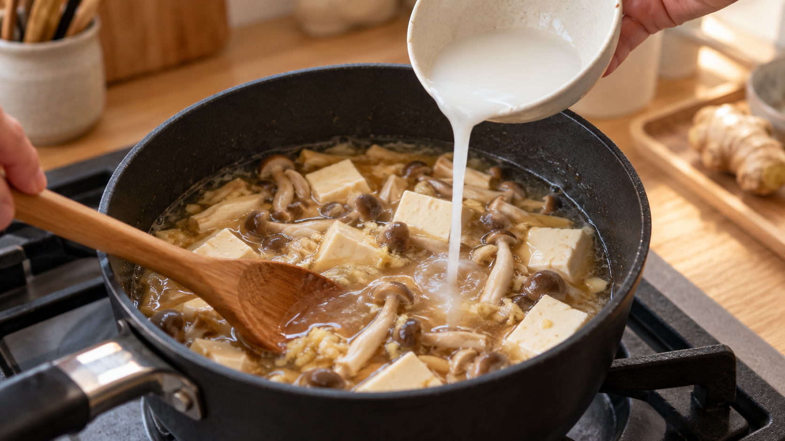

片栗粉は、冷たい水で溶く。「溶ける前」に粒をばらす
あんかけを作り、最後に片栗粉を入れる。
とろみは付いたのに、すくうと透明なゼリーの粒が混じっている。つぶそうとして混ぜ続けると、今度はとろみまで弱くなる。
このダマは、片栗粉が溶け残ったというより、粉が均一に散る前に、外側だけが熱で膨らんだ跡だ。
今日の結論
片栗粉1に対して冷たい水2を混ぜ、入れる直前にもう一度かき混ぜる。火を止めるか弱めてから、汁を混ぜながら少しずつ加える。
片栗粉は、冷たい水へ入れても砂糖のようには溶けない。小さな粒が水の中へ散った状態になるだけだ。
ところが、この「溶けていないこと」が役に立つ。冷たい水の中では粒がすぐに膨らまないため、鍋へ入る前に一粒ずつばらける時間を作れる。
冷たい水は、片栗粉を溶かすのではなく、散らしている
片栗粉の主成分は、じゃがいもから取ったでんぷんだ。
でんぷんは、小さな粒の中に長い鎖が折り重なって入っている。冷たい水では粒の形がほぼ保たれるため、混ぜれば白く濁るが、しばらく置くと底へ沈む。
水と熱がそろうと、粒は水を吸って大きく膨らみ、とろみを作る。この変化を糊化という。
たとえるなら、冷たい水の中の片栗粉は、まだ閉じた小さなスポンジだ。水中へ均等に散らしてから温めれば、それぞれが水を吸って広がる。粉の塊のまま熱い汁へ入れると、塊の外側だけが先に膨らみ、内側へ水が届きにくくなる。
だから「冷水で溶く」の本当の目的は、冷やすことそのものではない。熱でとろみが始まる前に、粒同士を離しておくことだ。
じゃがいものでんぷんは、温まると一気に膨らむ
じゃがいものでんぷんを整理した研究では、十分な水の中でおよそ58〜63℃へ達すると、粒の整った構造が崩れ、膨らみ、でんぷんの鎖が外へ出て粘りが生まれると説明されている。
さらに、でんぷん粒の変化を観察した研究では、じゃがいものでんぷんは加熱によって速く大きく膨らみ、粒の形を失いやすいことが確認された。
ここから分かるのは、片栗粉には「鍋の中でゆっくりほぐす時間」があまりないということだ。
熱い汁へ粉を直接落とすと、混ぜて散らすより先に一部が糊化する。反対に、冷たい水の中で先に粒を散らしておけば、鍋へ入れた瞬間から広い範囲で同じ変化を始めやすい。
家庭でのでんぷんの使い方を調べた研究でも、粉のまま加えた馬鈴薯でんぷんは不均一になり、水を2倍量使った水溶きでんぷんは均一なとろみになった。
研究の答えを台所へ戻すと、冷水、2倍量、混ぜ直しの三つが一組になる。
今日の一皿：豆腐ときのこのしょうがあん
片栗粉の変化が見やすい、透明感のある和風あんにする。とろみを付ける前に味を決めておくと、最後の加熱を短くできる。
材料（2人分）
- 絹ごし豆腐 300g
- しめじ 100g
- だし 250ml
- しょうゆ 大さじ1
- みりん 大さじ1
- しょうが 10g
- 片栗粉 12g
- 冷たい水 24ml
- 小ねぎ 適量
作り方
- 豆腐は8等分に切る。しめじは石づきを落としてほぐし、しょうがは細切りにする。
- 鍋へだし、しょうゆ、みりん、しょうが、しめじを入れ、中火で3分煮る。豆腐を加え、崩さないように2分温める。
- 小さな器へ片栗粉と冷たい水を入れ、底に粉が残らなくなるまで混ぜる。この時点では透明にならず、白く濁っていてよい。
- 鍋の火を止める。水溶き片栗粉は沈みやすいため、入れる直前にもう一度、器の底から混ぜる。
- 鍋の汁をお玉でゆっくり動かしながら、水溶き片栗粉を細く回し入れる。一か所へまとめて落とさない。
- 弱火へ戻し、鍋底をなぞるように30〜60秒混ぜる。全体が再びふつふつし、白い濁りが薄れてつやが出たら火を止める。強く沸かし続けたり、同じ場所を激しく練り続けたりしない。
- 器へ盛り、小ねぎを散らす。
とろみが弱く感じても、粉を直接足さない。新しく片栗粉と冷水を1対2で混ぜ、同じ手順で少量ずつ加える。
日常へ広げるなら、「でんぷんが熱に会う前」を整える
この考え方は、中華あん、かきたま汁、カレーの仕上げ、果物のソースにも使える。
見るべきなのは料理名ではなく、粉の一粒ずつに水が触れた状態で、熱へ渡せるかだ。
先に冷水で散らす。沈んだら混ぜ直す。熱い料理へ入れるときは、火を弱め、汁を動かしながら細く入れる。この順番なら、鍋が変わっても判断できる。
一方、冷水でもすぐにとろみが付く「即席タイプ」や加工でんぷんは、普通の片栗粉と性質が違う。買い物では原材料名と使用方法を見て、商品の表示を優先する。
まとめ
片栗粉は、冷たい水に溶けて透明になるわけではない。
冷水の役目は、熱で膨らむ前のでんぷん粒を、一粒ずつ水の中へ散らすことだ。そこで作った均一な濁りを、混ぜながら鍋全体へ広げてから温めると、なめらかなとろみになりやすい。
覚えるのは三つだけでよい。
片栗粉1に冷水2。入れる直前に混ぜ直す。火を弱め、汁を動かしながら加える。
次にあんを作るときは、片栗粉の白い濁りが均一かを見てから、鍋へ移してみてほしい。
参考文献
- 楠瀬千春, 永久美菜子. 嚥下食のための簡便なとろみ液調製法の考案. 日本調理科学会大会研究発表要旨集. 2008;20:20. https://doi.org/10.11402/ajscs.20.0.20.0
- Han H, et al. Insight on the changes of cassava and potato starch granules during gelatinization. International Journal of Biological Macromolecules. 2019;126:37-43. https://doi.org/10.1016/j.ijbiomac.2018.12.201
- Reyniers S, et al. Transformations and functional role of starch during potato crisp making: A review. Journal of Food Science. 2020;85(12):4118-4129. https://doi.org/10.1111/1750-3841.15508
- Lai LN, Karim AA, Norziah MH, Seow CC. The effects of concentration and sodium hydroxide on the rheological properties of potato starch gelatinisation. Carbohydrate Polymers. 2002;48(3):295-304. https://doi.org/10.1016/S0144-8617(02)00007-3
※この記事は一般的な未加工の片栗粉を想定している。即席タイプや加工でんぷんは、商品の表示に従う。